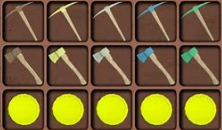

(after you get wood using stone from the ground)The first tool you can make is the wooden tools on the left. The tools on the right are the best tools you could use(unless you have purple tools)
You can make armor, tools, and weapons. wooden tools are made in workbench, and better ones and armor are made using anvil